Электронные карты полей и объектов
Карта всех объектов: точные контуры полей, кадастры, склады, весовые, заправки, и другая инфраструктура. Можно загружать свои подложки, просматривать и создавать операции прямо с карты.
Контроль всех этапов сезона и качества работ, автоматический учёт и
повышение эффективности использования ресурсов в одном окне с
агрономией и точным земледелием.


Карта всех объектов: точные контуры полей, кадастры, склады, весовые, заправки, и другая инфраструктура. Можно загружать свои подложки, просматривать и создавать операции прямо с карты.
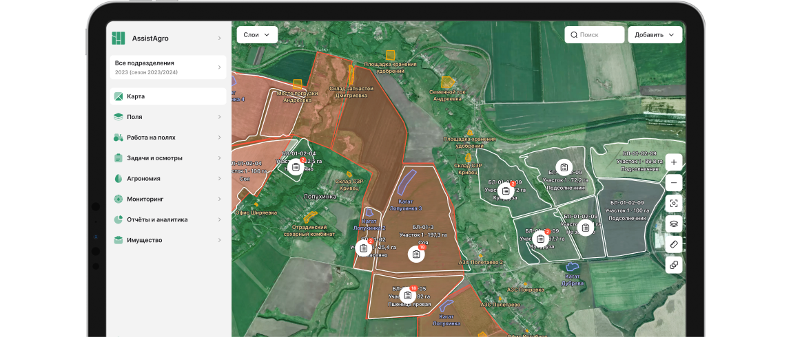
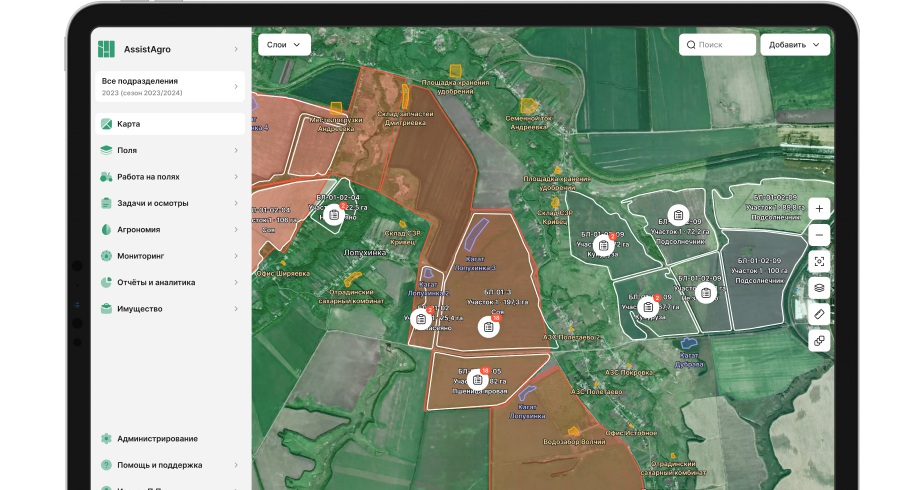
Ключевая информация по каждому участку: техкарты, операции, севооборот, внесенные ТМЦ, погода, прогнозы, результаты осмотров и распознаваний, рекомендации и инструменты точного земледелия.
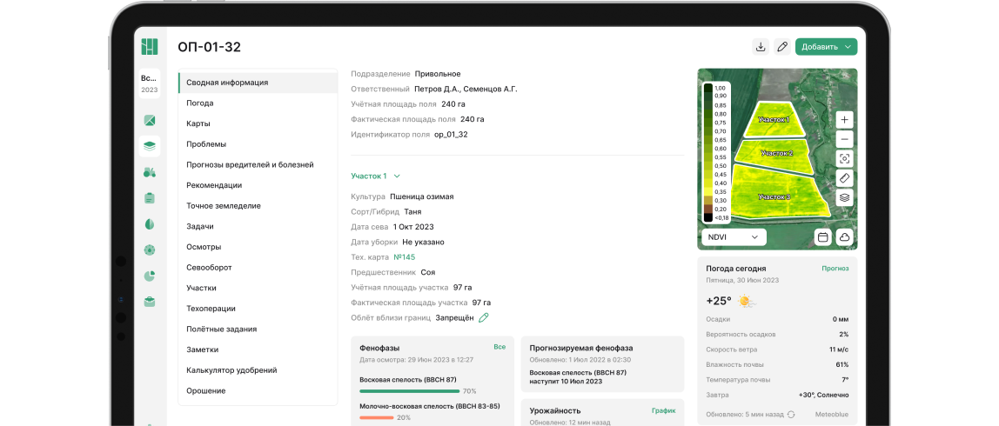
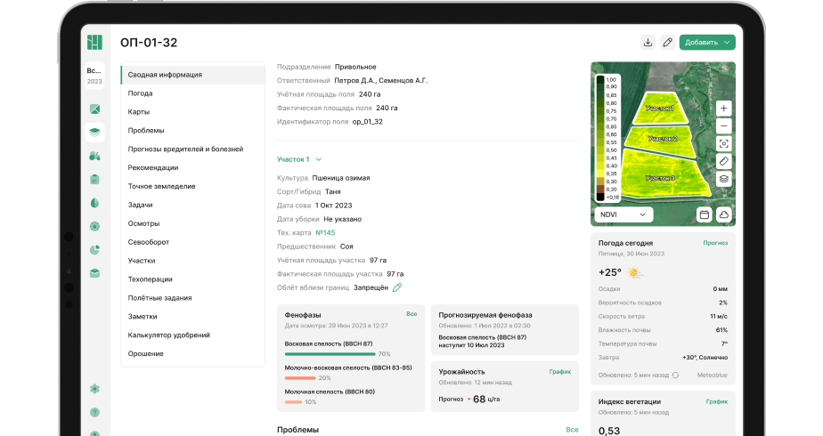
Формируйте структуру посевных площадей и техкарты. Планируйте операции с техникой, орудиями, персоналом и материалами. Система поможет рассчитать потребности в ресурсах (ТМЦ, ГСМ, зарплата), выбрать наиболее маржинальную технологию и исключить дефицит или срывы сроков. Единый план доступен всем отделам.
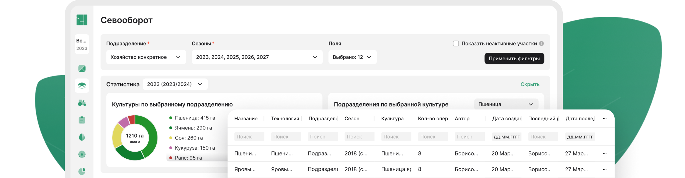
Назначайте технику, орудия и исполнителей на смену за минуты. Согласовывайте план с агрономическими сроками и автоматически выбирайте оптимальные погодные окна для обработок.
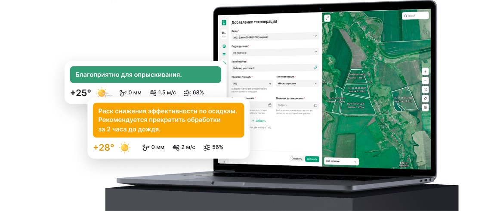
Путевые и учётные листы формируются из плана и факта по полевым операциям, автоматически интегрируются в ERP и соответствуют требованиям учёта — быстрое закрытие смен с минимумом ошибок.
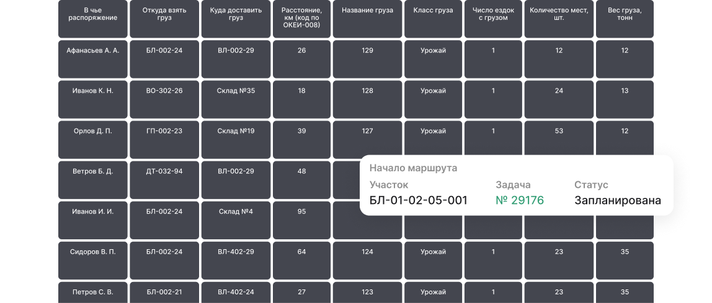
Поддержка техники с терминалами различных поставщиков: треки онлайн и архив, RFID-идентификация орудий и механизаторов, поддержка датчиков и гибкие настройки мониторинга. Основа для автоматического учёта работ, тревог и прозрачного контроля операций.
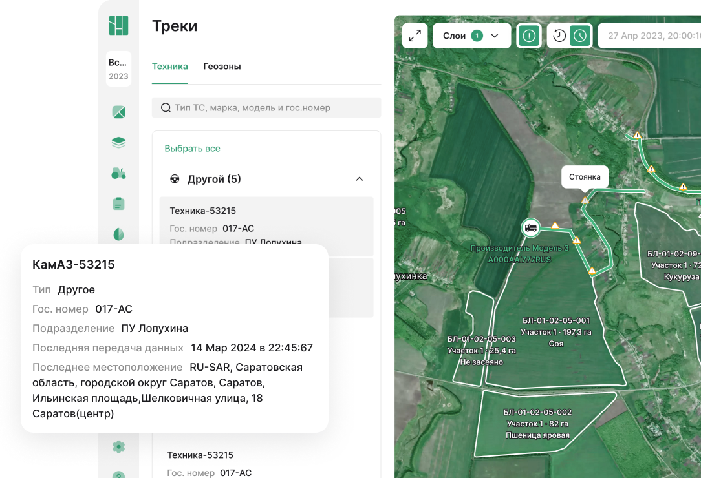
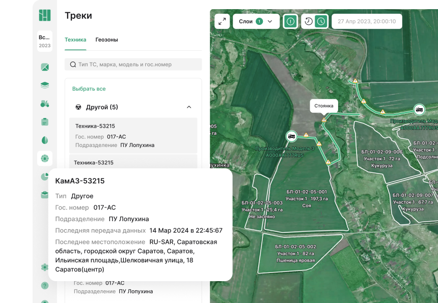
Алгоритмы 24/7 обрабатывают GPS-треки, данные терминалов и RFID, автоматически определяя работы, их треки и параметры. Вы всегда видите, кто и на каком поле работал, площадь обработки, выполнение норм и расход ТМЦ. Все данные передаются в учётную систему для актов и расчёта зарплаты.
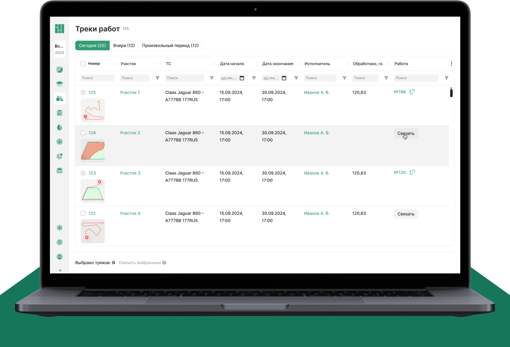
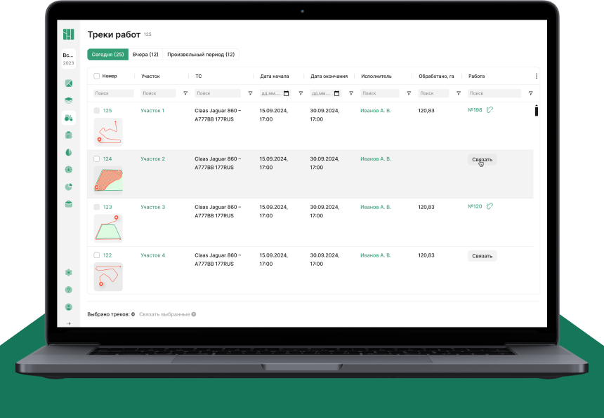
Если вы ведёте план полевых операций, система сама определит работы по трекам техники, посчитает обработанную площадь, сверит с планом, рассчитает факт и передаст данные в ERP.
Диспетчер видит заранее рассчитанные треки работ со всеми ключевыми параметрами, ему остается выбрать орудия, быстро связать треки с техоперацией, а система также рассчитает площадь и передаст данные в ERP.
Просмотр треков работ по полю или полевой операции. Быстрое выявление и добавление «неучтённых» операций в систему.
Система также определяет транспортные работы: время движения и стоянок, начальные/конечные геозоны. Полная история маршрутов — основа автоматического расчета рейсов, тонно-км и объёма перевезенного груза.
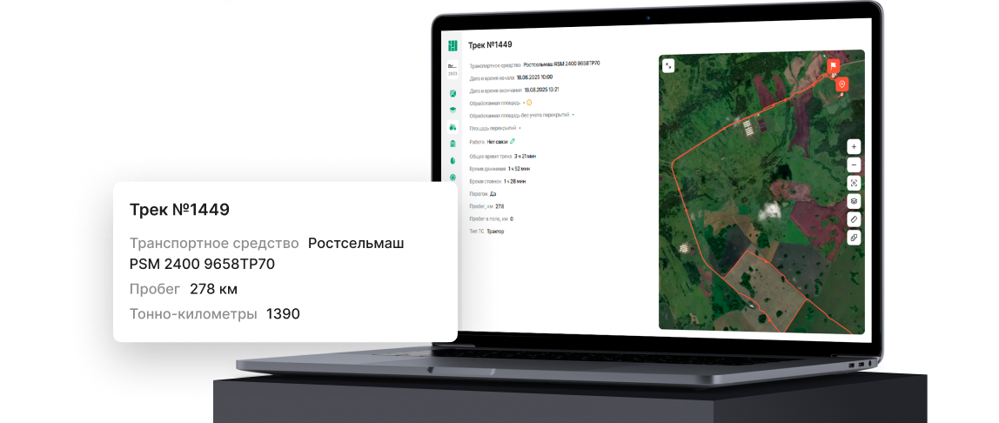
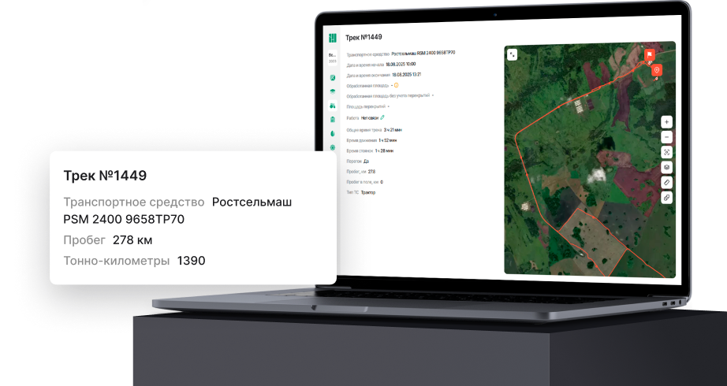
Система в реальном времени отслеживает расход семян и качество высева: пропуски, двойники, ошибки по сошникам. Исключает хищения, повышает качество сева и даёт до +2% к урожайности.
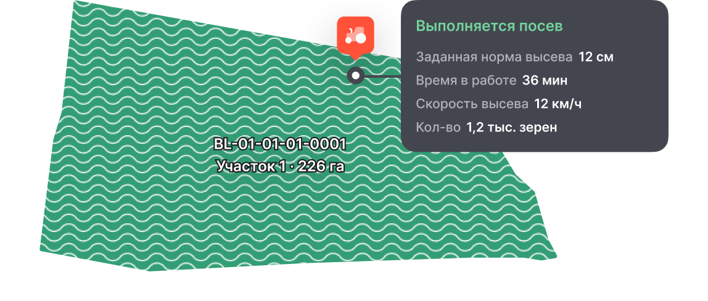
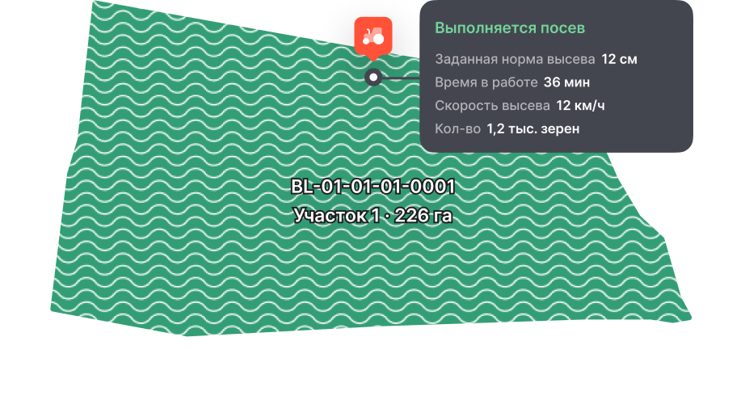
Система отслеживает события по ходу работ: слив топлива, выход за границы поля, простои, внеплановые выгрузки, работа без назначенной операции и другие отклонения. Уведомления приходят по выбранным каналам — вы быстро реагируете на потенциальные проблемы, не теряя деньги и время.
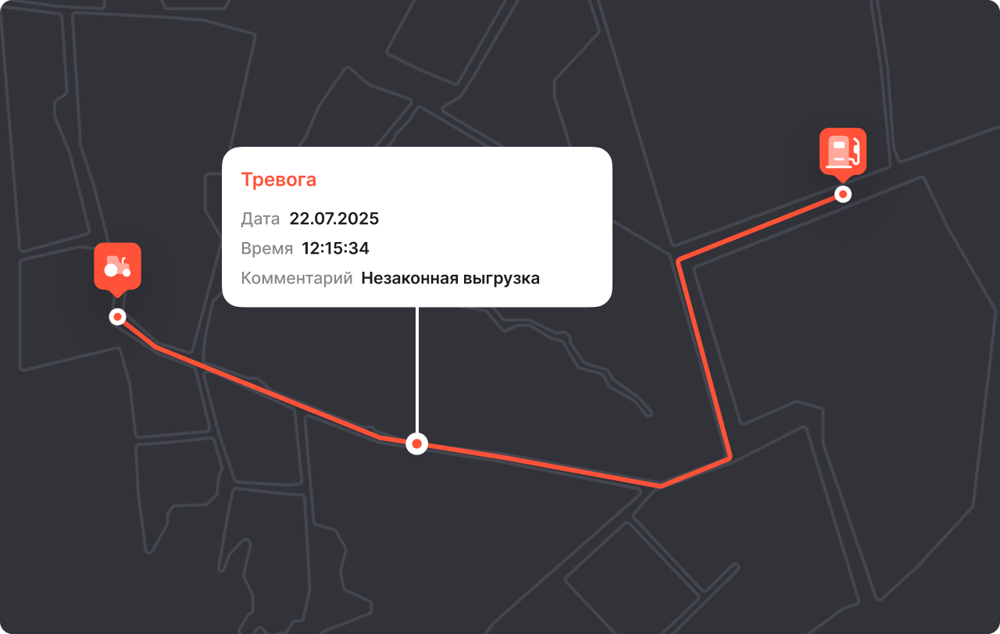
Нейросеть рассчитывает оптимальный маршрут техники техники для каждой операции. Трек автоматически загружается в автопилот по API или скачивается вручную. Использование оптимального трека снижает перекрытия и пропуски, экономит топливо, материалы и время — до 10% на каждой операции.
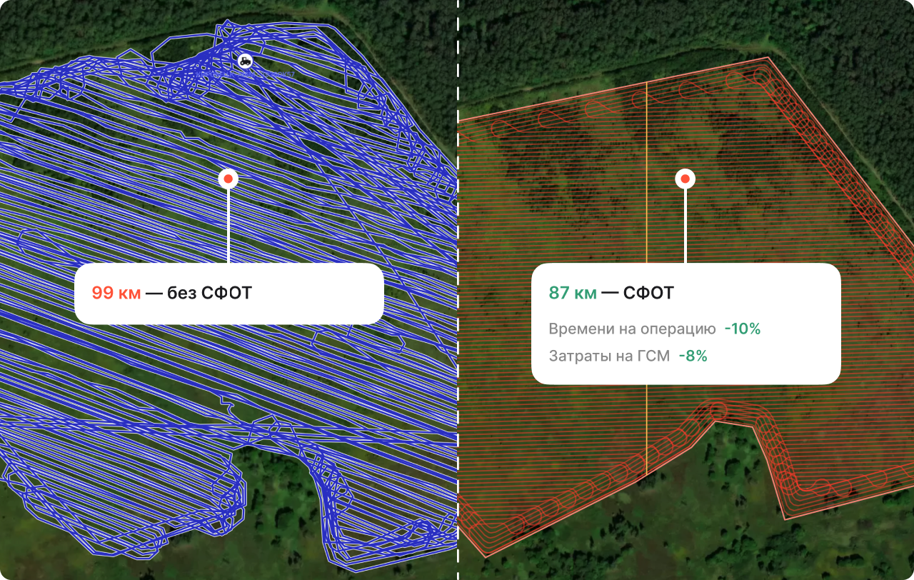
Отчеты по кампаниям — сколько засеяно/убрано, общий прогресс и сроки, задействованная/свободная техника, простои и причины. Следите и оперативно перераспределяйте ресурсы.
Фиксируйте взвешивания, поступления на склады, отгрузку на элеватор или в реализацию. Триггеры помогут выявять внеплановые выгрузки — контролируйте путь урожая от поля до отгрузки, избегая потерь и хищений.
Фиксация поступлений и отгрузок. Списание на операции по плану и факту. Аналитика остатков и движения по категориям. Прозрачный учет c минимизацией хищений и потерь.
Система контролирует путь топлива от склада ГСМ до бака техники: место, время, объём, остатки и «свой/чужой». Видно фактический расход на гектар и километр, исключаются хищения и ошибки. В случае несанкционированного слива система мгновенно уведомляет и показывает место события.
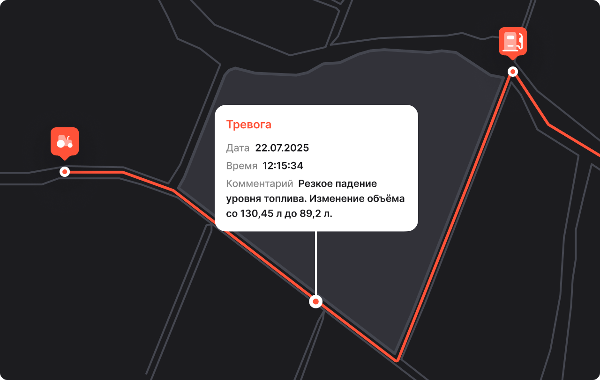
Каждая канистра, мешок или посевная единица учитываются поштучно через QR-код и мобильное приложение. Фиксируются все операции — от приёмки на складе до выдачи механизатору в поле. На основе данных формируются складские документы, а передача информации о семенах, СЗР и зерне в ФГИС становится проще, быстрее и точнее.
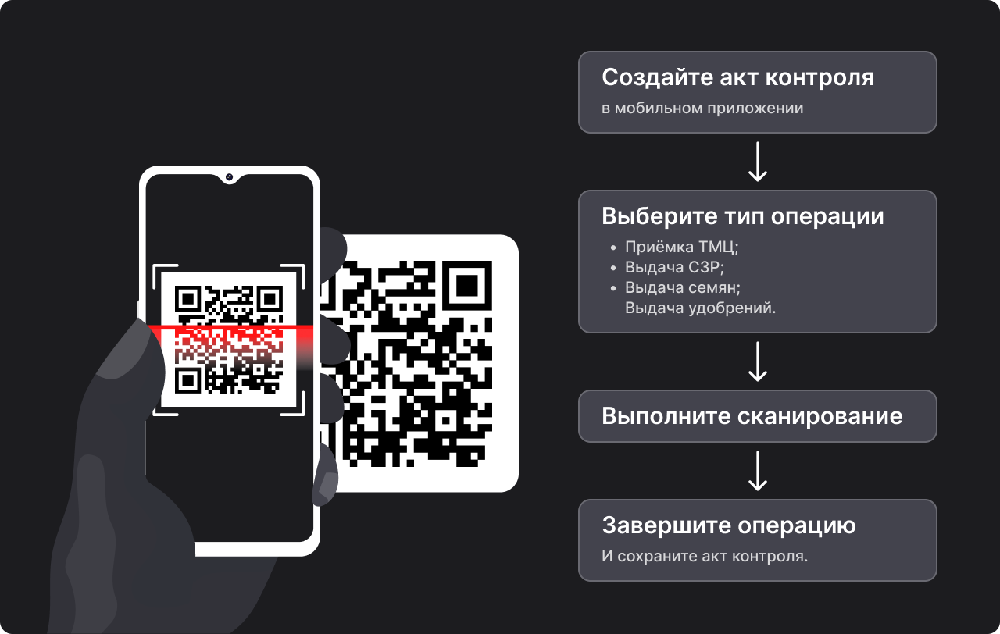
Автоматическая выгрузка из Росреестра, наложение полей на кадастровые границы, расчёт пересечений и площадей. Триггеры по срокам аренды и платежам. Это упрощает работу юристов, снижает риски и помогает находить неиспользуемые гектары.
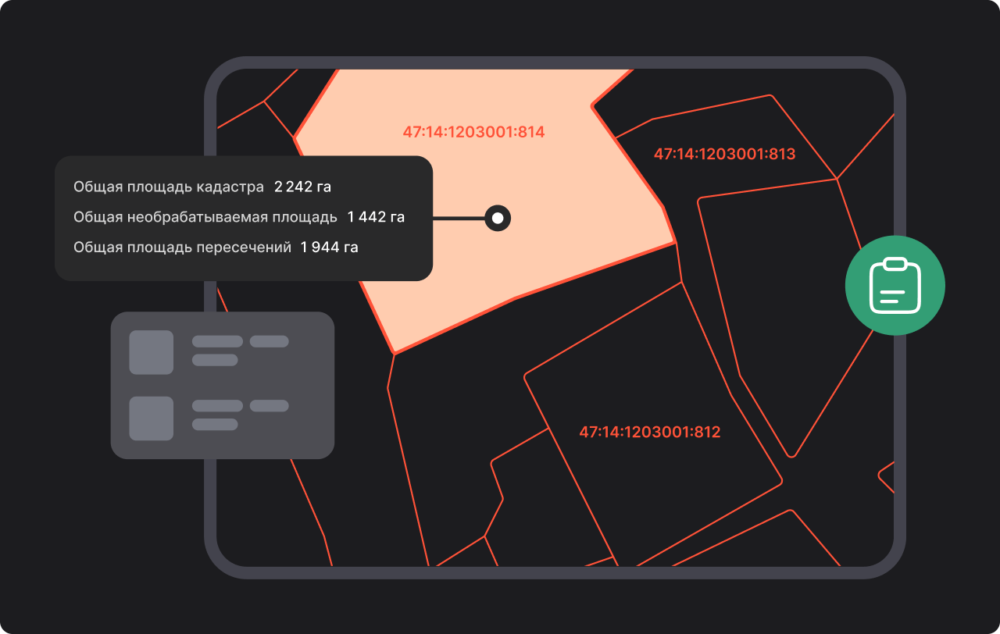
Нейросеть каждый день собирает данные по хозяйству: работы, осмотры, отклонения. Система формирует короткую текстовую и голосовую сводку и отправляет её в чат в мессенджер вашей команды. Решения обсуждаются сразу в чате с ответственными — вы реагируете на ситуацию моментально.
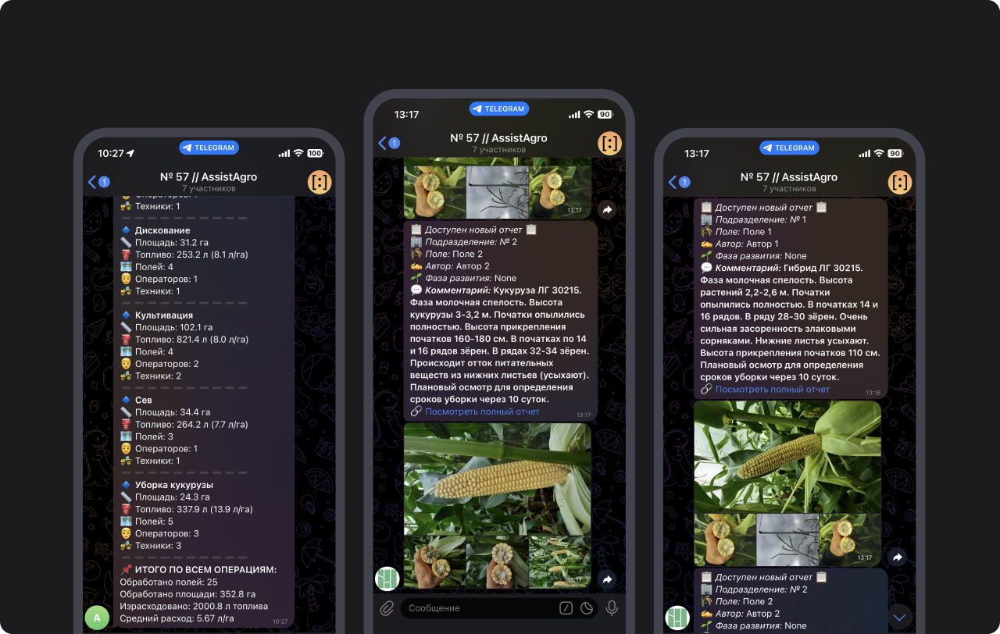
60+ отчётов: от посевной и качества до затрат и факторов урожайности. Все данные из разных систем объединены для принятия управленческих решений. Возможность разработки любых отчетов под ваши задачи.
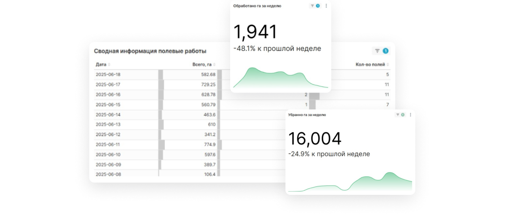
Готовые интеграции с 1С/SAP, двусторонний API для интеграции с бизнес-системами и оборудованием. Исключает двойной ввод и ошибки.
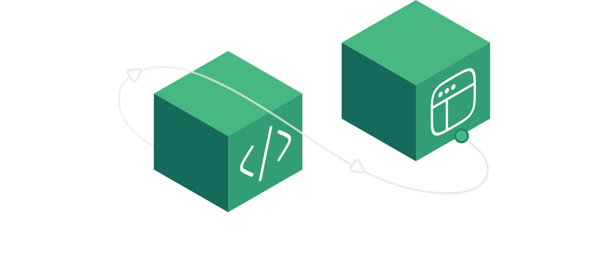